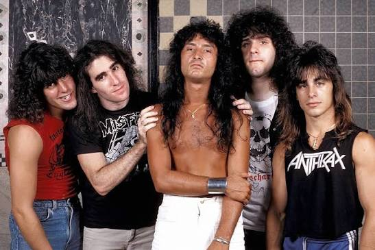
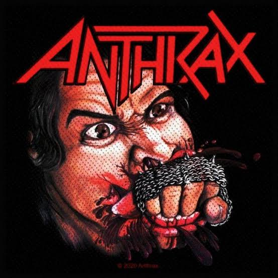
Kiadás: 1984. január 28
FISTFUL OF METAL
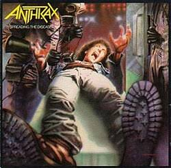
Kiadás: 1985. október 30
SPREADING THE DISEASE
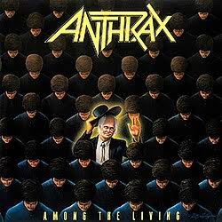
Kiadás: 1987. március 22
AMONG THE LIVING
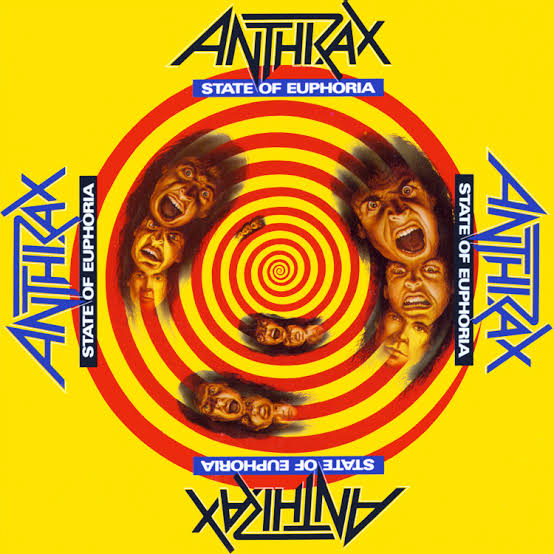
Kiadás: 1988. szeptember 18
STATE OF EUPHORIA
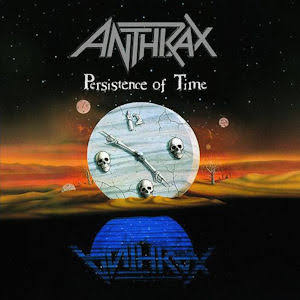
Kiadás: 1990. augusztus 21
PERSISTENCE OF TIME
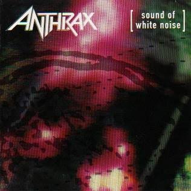
Kiadás: 1993. május 25
SOUND OF WHITE NOISE
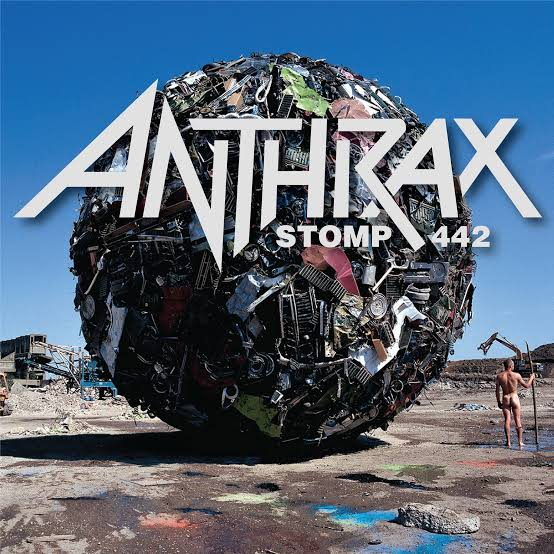
Kiadás: 1995. október 24
STOMP 442
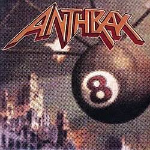
Kiadás: 1998. július 21
VOLUME 8: THE THREAT IS REAL
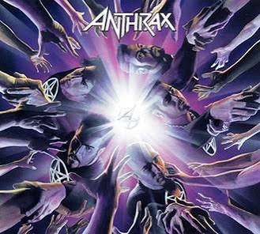
Kiadás: 2003. május 6
WE'VE COME FOR YOU ALL
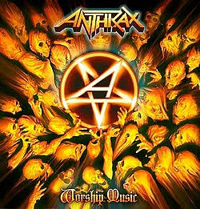
Kiadás: 2011. szeptember 13
WORSHIP MUSIC
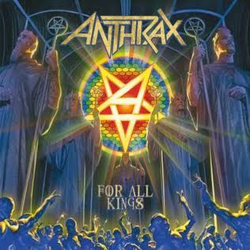
Kiadás: 2016. február 26
FOR ALL KINGS
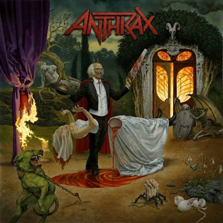
Kiadás: 2026. szeptember 18
CURSUM PERFICIO